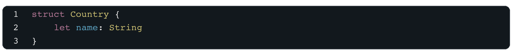
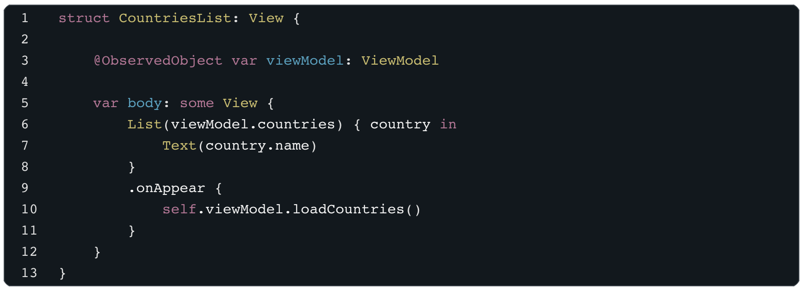
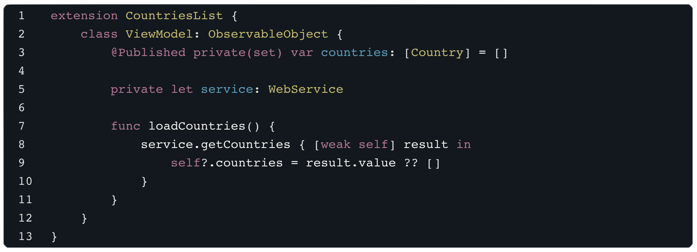

Fliingo.com
I started building a website about trip planning. Enjoying this project, I
also build an app for iOS and macOS.
www.fliingo.com -
www.fliingo.com
Architecture
How did I architect this project?
No code but important part ...
Purpose - Design - User Experience
I wrote down every screen, feature and purpose of the app, then I sketched the app to create a beatiful design and focus on great user experience.
Architecture - App
MVVM Architecture
Let’s consider this quick example of the MVVM module for a SwiftUI app. This is an example taken online. I used the same architecture to update my view with api request for example.
Model: a data container
View: a SwiftUI view
ViewModel: an ObservableObject that encapsulates the business logic and allows the View to observe changes of the state
In this simplified example, when the View appears on the screen, the onAppear callback calls loadCountries() on the ViewModel, triggering the networking call for loading the data inside WebService. ViewModel receives the data in the callback and pushes the updates through @Published variable countries, observed by the View.
Why?
Although, Model View architect is a great architecture for simple screen, when we need to do more complex systems, it's easier to understand, write and update the code with the MVVM Architecture. Plus the code becomes more modular.